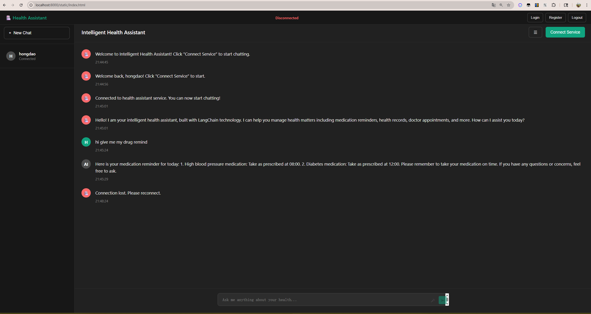
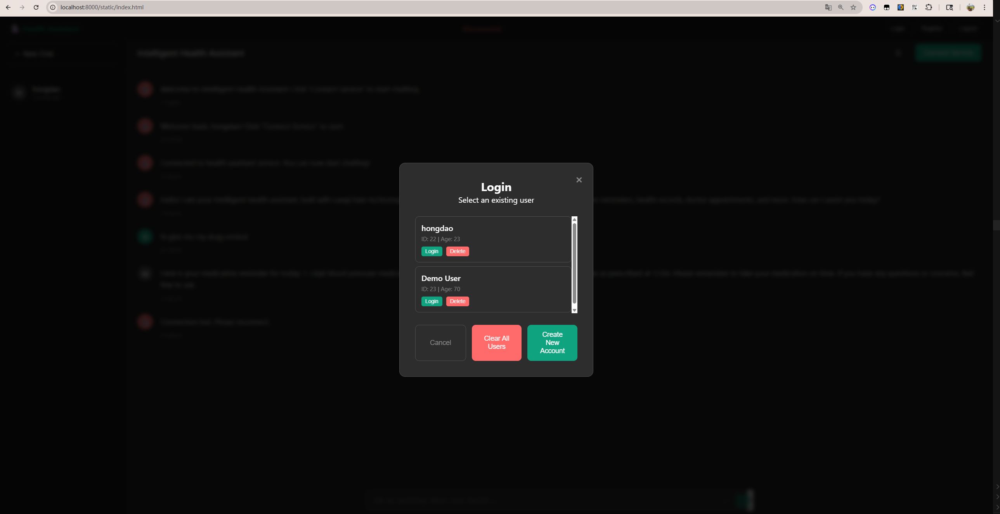

Project Summary
Project Achievements
This Intelligent Health Assistant project successfully achieved:
- Complete Voice-Driven AI Agent System - Based on LangChain and LangGraph
- Health Management Solution for Elderly People - Reducing usage barriers
- Modern Technical Architecture - Asynchronous processing, modular design
- Comprehensive Documentation and Testing - Complete API documentation and test coverage
- Practical Application Value - Solving real user pain points
Technical Highlights
- 🎯 Intelligent Conversation Management: Multi-turn conversation understanding based on GPT-4
- 🎤 Voice Interaction Optimization: Specifically optimized for Chinese voice recognition
- 📊 Health Data Management: Structured health data model and intelligent reminders
- 🔧 LangChain Integration: Intelligent execution of 7 professional health management tools
- 🏗️ System Architecture Design: Asynchronous processing, modular design, easy to extend
Project Demo Gallery

Figure 1: Main user interface showing voice interaction capabilities

Figure 2: Login Page

Figure 3: Register Page
Let AI technology safeguard the health of elderly people! 🏥✨